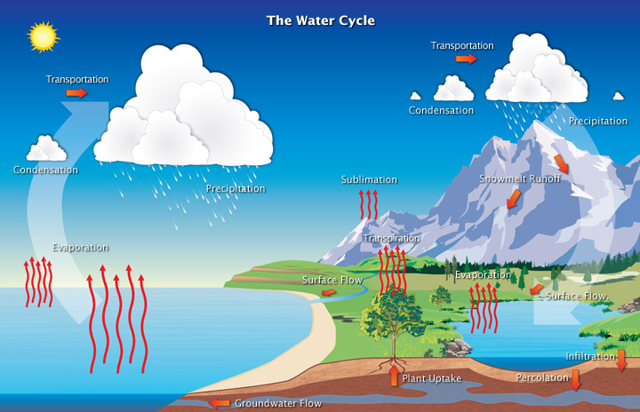

A Multi-Phased Journey The water, or hydrologic, cycle describes the pilgrimage of water as water molecules make their way from the Earth's surface to the atmosphere and back again, in some cases to below the surface. This gigantic system, powered by energy from the Sun, is a continuous exchange of moisture between the oceans, the atmosphere, and the land.  Studies have revealed that evaporation-the process by which water changes from a liquid to a gas-from oceans, seas, and other bodies of water (lakes, rivers, streams) provides nearly 90% of the moisture in our atmosphere. Most of the remaining 10% found in the atmosphere is released by plants through transpiration. Plants take in water through their roots, then release it through small pores on the underside of their leaves. In addition, a very small portion of water vapor enters the atmosphere through sublimation, the process by which water changes directly from a solid (ice or snow) to a gas. The gradual shrinking of snow banks in cases when the temperature remains below freezing results from sublimation. Together, evaporation, transpiration, and sublimation, plus volcanic emissions, account for almost all the water vapor in the atmosphere that isn't inserted through human activities. While evaporation from the oceans is the primary vehicle for driving the surface-to-atmosphere portion of the hydrologic cycle, transpiration is also significant. For example, a cornfield 1 acre in size can transpire as much as 4,000 gallons of water every day. After the water enters the lower atmosphere, rising air currents carry it upward, often high into the atmosphere, where the air is cooler. In the cool air, water vapor is more likely to condense from a gas to a liquid to form cloud droplets. Cloud droplets can grow and produce precipitation (including rain, snow, sleet, freezing rain, and hail), which is the primary mechanism for transporting water from the atmosphere back to the Earth's surface. When precipitation falls over the land surface, it follows various routes in its subsequent paths. Some of it evaporates, returning to the atmosphere; some seeps into the ground as soil moisture or groundwater; and some runs off into rivers and streams. Almost all of the water eventually flows into the oceans or other bodies of water, where the cycle continues. At different stages of the cycle, some of the water is intercepted by humans or other life forms for drinking, washing, irrigating, and a large variety of other uses. Groundwater is found in two broadly defined layers of the soil, the "zone of aeration," where gaps in the soil are filled with both air and water, and, further down, the "zone of saturation," where the gaps are completely filled with water. The boundary between these two zones is known as the water table, which rises or falls as the amount of groundwater changes. The amount of water in the atmosphere at any moment in time is only 12,900 cubic kilometers, a minute fraction of Earth's total water supply: if it were to completely rain out, atmospheric moisture would cover the Earth's surface to a depth of only 2.5 centimeters. However, far more water-in fact, some 495,000 cubic kilometers of it-are cycled through the atmosphere every year. It is as if the entire amount of water in the air were removed and replenished nearly 40 times a year. Water in Daily Life In the United States, we are lucky to have easy access to some of the safest treated water in the world-just by turning on the tap. We wake up in the morning, take a shower, brush our teeth, grab a cup of coffee and head out for the day. Water is an important part of our daily lives and we use it for a wide variety of purposes, but do we really understand how much we use? The average American family uses more than 300 gallons of water per day at home. Roughly 70 percent of this use occurs indoors. Nationally, outdoor water use accounts for 30 percent of household use yet can be much higher in drier parts of the country and in more water-intensive landscapes. For example, the arid West has some of the highest per capita residential water use because of landscape irrigation. The Water Around Us Water also plays a big role in our local communities. Without water there would be no local business or industry. Fire fighting, municipal parks, and public swimming pools all need lots of water. An array of pipes, canals, and pumping stations managed by our public water systems are needed to bring a reliable supply of water to our taps each day. What is Water Pollution Water pollution is the pollution or contamination of natural water bodies like lakes, rivers, streams, oceans, and groundwater due to inflow or deposition of pollutants directly or indirectly into water systems. Water pollution very often caused by human activities. Any modifications or change in the chemical, physical and biological properties of water that can cause any harmful consequences on living things and the environment is known as water pollution. Types of Water Pollution There are may types of water pollution depending on the sources the pollutants originate from. Types of water pollution are as follows: Nutrient Pollution Sewage water, waste water that contain high level of nutrients enter into water bodies. Nutrients in water encourage the growth of algae and weed in the water. This is known as eutrophication. This makes the water unfit for consumption and clog filters. Algal blooms in the water consume all the oxygen in the water, leading to suffocation for other water organisms. Surface Water Pollution Surface water includes rivers, lakes, oceans, streams, lagoons. Surface run-off substances that are hazardous dissolve and mix with water polluting the surface water. These run-off substances can be from any source like factories, domestic, sewage, agriculture etc. Oxygen Depletion Increase in the content of biodegradable matter in the water encourages the growth of microorganisms which end up using most of the oxygen. This results in oxygen depletion, killing aerobic organisms producing more of toxins like ammonia and sulphides. Ground Water Pollution Chemicals from fertilizers and pesticides applied to the soil are washed off and seep in the ground contaminating the composition of the ground water causing pollution. Natural Pollution Sometimes pollution is caused by microorganisms like bacteria and protozoa, this natural pollution can be lethal for fishes and other water life. Consumption of this water can lead to serious illness to humans. Suspended Matter Particulate matter of chemicals and other substances do not dissolve in water easily. These suspended particulate matters settle at the bottom of the water body harming the aquatic life at the floor of the water bodies. Chemical Water Pollution Most of the industrial let-off and chemical fertilizers used in farming end up in the water bodies. These materials are poisonous to most of the aquatic life, can make them infertile and eventually cause death. Water from these sources is obviously unfit for consumption. Oil Spillage Oil tankers and offshore petroleum refineries cause oil leakage polluting water. Oil spills can cause death of many aquatic organisms and also stick to the bodies and feather so seabirds which makes them unable to fly. Domestic Sewage Domestic sewage is the waste water from households. It is also includes sanitary sewage, and it contains a variety of dissolved and suspended. Domestic sewage contains disease causing microbes and chemicals contained in washing powders affect the health of all life forms in water. Agricultural Run-off The practices followed in agriculture affect the groundwater quality. Intensive cultivation causes fertilizers and pesticides to seep into the groundwater; this process is known as leaching. Irrigation run-off from agricultural fields causes high nitrate content in ground water. Industrial Effluents Untreated waste water from manufacturing industries contributes to water pollution. Thermal Water Pollution Thermal water pollution is the rise or fall in water temperatures. This changes in the temperature of water can be caused due to industries. Some industries use water as cooling agent, the heated water is let-off directly into the natural environment at a higher temperature. Cold water pollution happens when cold water is released into the water bodies. Aquatic organisms like fish are vulnerable to slight changes in the temperature. Heated water decreases oxygen in the water killing fish and other aquatic organisms. Cold water affects eggs and larvae, some invertebrates of the aquatic ecosystem. Sources of Water Pollution Sources of water pollution, particularly ground water pollution are group under two categories based on the origin of the pollutant. Point Source Pollution Water pollution caused by point sources refers to the contaminants that enter the water body from a single, identifiable source like pipe or ditch. Point source pollutants can be discharges from sewage treatment plant, factories or a city storm drain. Nonpoint Source Pollution Pollution caused by nonpoint sources refers to the contamination that does not originate from a single source. Nonpoint source pollution is the cumulative effect of small contaminants gathered in large area. Leaching of nitrogen compounds from agricultural land, storm water runoff over an agricultural land or a forest are examples of nonpoint source pollution. Water Pollutants Major water pollutants are as follows: Sewage - Sewage pollutants include domestic and hospital wastes, animal and human excreta etc. The sewage let off causes oxygen depletion, spread of diseases/epidemics. Metals - Metals like mercury are let off into water bodies from industries. Heavy metals like mercury cause poisoning and affect health causing numbness of tongue, lips, limbs,deafness, blurred vision and mental disorders. Lead - Industrial wastes also lead to Lead pollution. If lead enters the human body system in higher quantities it affects RBCs, bone, brain, liver, kidney and the nervous system. Severe lead poisoning can also lead to coma and death. Cadmium - Source for cadmium pollution is industries, fertilizers. Cadmium gets deposited in visceral organs like liver, pancreas, kidney, intestinal mucosa etc. Cadmium poisoning causes vomiting, headache, bronchial pneumonia, kidney necrosis, etc. Arsenic - Fertilizers are source for arsenic pollution. Arsenic poisoning causes renal failure and death. It also causes liver and kidney disorders, nervous disorders and muscular atrophy, etc. Agrochemicals like DDT - It is a pesticide. Accumulation of these pesticides in bodies of fishes, birds, mammals and man affects nervous system, fertility and causes thinning of egg shells in birds. Bacteria, Viruses and Parasites - These are sourced from human and animal excreta, they are infectious agents. Plastics, Detergents, Oil and Gasoline - They are a waste from industries, household and farms. They trigger organic pollution and is harmful to health. Inorganic Chemicals - Inorganic chemicals like acids, salts, metals are a result of industrial effluents, household cleansers, and surface run-off and are injurious to health. Radioactive Materials - Mining and ores processing, power plants, weapons production and natural give rise to radioactive pollution like that of uranium, thorium, cesium, iodine and radon. Radioactive pollution causes serious health diseases to all organisms. Sediments - Sedimentation of soil, silt due to land erosion and deposition causes disruption in ecosystem. Plant Nutrients - Nutrients like nitrates, phosphates, and ammonium are let off from agricultural and urban fertilizers, sewage and manure. Excess of nutrients cause eutrophication and affect the ecosystem. Animal Manure and Plant Residues - These substances in water causes increased algal blooms and microorganism population. This increases oxygen demand of water, affecting aquatic ecosystem. This is introduced into water due to sewage, agricultural run-off, paper mills, food processing etc. Thermal Pollution - Temperature changes of water caused due to using water as cooling agent in power plants and industries causes increase in water temperature affecting the aquatic life. Causes of Water Pollution The contaminants that lead to water pollution include a wide variety of substance like chemicals, pathogens, temperature changes and discoloration. Industrial activity causes huge water pollution. Wastes from factories are let off into freshwater to carry waste from plants into rivers. This contaminates water with pollutants like lead, mercury, asbestos and petrochemicals. Sewage let off from domestic households, factories, commercial buildings are untreated in water treatment plants yet are disposed into the sea. Sewage containing flush chemicals and pharmaceuticals causes greater problems. Solid waste dumping and littering of cardboard, plastics, glass, styrofoam, aluminium tins, etc., in water bodies. Oil spills from tankers and ship travel causes oil pollution. Oil does not dissolve in water and forms a thick layer on the water surface. Burning of fossil fuels and emissions from industries and motor vehicles causes formation of acidic particles in the atmosphere. These particles fuse with water vapor resulting in acid rain. Acid rain harms aquatic life. Increase in water temperature is a result of global warming and thermal plants use water as cooling agents for mechanical equipments. Other causes of water pollution: Detergents, by-productions of disinfection, food processing waste, insecticides, petrochemicals, debris from logging operations, volatile organic compounds, personal hygiene and cosmetic products, drug pollution, chemical wastes, fertilizers, heavy metals, and sedimentation are other causes of water pollution. Effects of Water Pollution Water pollution extensively affects health in humans and aquatic ecosystems. Groundwater contamination causes reproductive and fertility disorders in wildlife ecosystems. Sewage, fertilizer and agricultural run-off has nutrients, organic substances which lead to increase of algal bloom causing oxygen depletion. The lower oxygen levels affect the natural ecological balance of rivers and lake ecosystem. Consumption and swimming in contaminated water causes skin diseases, cancer, reproductive problems, stomach ailments in humans. Industrial effluents and agricultural pesticides accumulate in aquatic environments causing harm to aquatic animals and lead to biomagnifications. Heavy metals like mercury, lead are poisonous to small children and women. These chemicals interfere in the development of nervous system in fetuses and young children. Rising water temperatures destroy aquatic ecosystem. Coral reefs are bleached due to warmer temperatures. Warmer waters forces indigenous water species to seek cooler water causing ecological shift of the affected area. Littering by humans like plastic bags, clog and suffocate aquatic animals. Water pollution causes soil erosion in streams, rivers and flooding due to accumulation. Why Are Wetlands Important? Wetlands are important for so many reasons: The Role of Wetlands in an Ecosystem Wetlands prevent flooding by holding water much like a sponge. By doing so, wetlands help keep river levels normal and filter and purify the surface water. Wetlands accept water during storms and whenever water levels are high. When water levels are low, wetlands slowly release water. Wetlands also release vegetative matter into rivers, which helps feed fish in the rivers. Wetlands help to counter balance the human effect on rivers by rejuvenating them and surrounding ecosystems. Many animals that live in other habitats use wetlands for migration or reproduction. For example, herons nest in large old trees, but need shallow areas in order to wade for fish and aquatic life. Amphibians often forage in upland areas but return to the water to mate and reproduce. While wetlands are truly unique, they must not be thought of as isolated and independent habitat. To the contrary, wetlands are vital to the health of all other biomes and to wildlife and humans everywhere. Unlike most other habitats, wetlands directly improve other ecosystems. Because of its many cleansing benefits, wetlands have been compared to kidneys. The analogy is good one. Wetlands and kidneys both help control water flow and cleanse the system. Erosion Control Looking at pictures of deltas, one can tell that rivers deposit a lot of sediment into the ocean. The sediment is from top soil that has been eroded and washed away. Emergents (plants firmly rooted in the muddy bottom but with stalks that rise high above the water surface) are able to radically slow the flow of water. As a result, they counter the erosive forces of moving water along lakes and rivers, and in rolling agricultural landscapes. Erosion control efforts in aquatic areas often include the planting of wetlands plants. Wetlands and Water Purification Wetlands also clean the water by filtering out sedimentation, decomposing vegetative matter and converting chemicals into useable form. The ability of wetlands to recycle nutrients makes them critical in the overall functioning of earth. No other ecosystem is as productive, nor as unique in this conversion process. In some places artificial wetlands were developed solely for the purpose of water purification. |